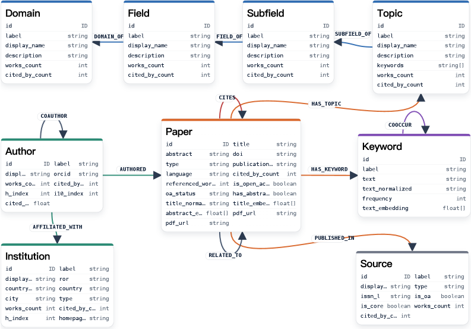
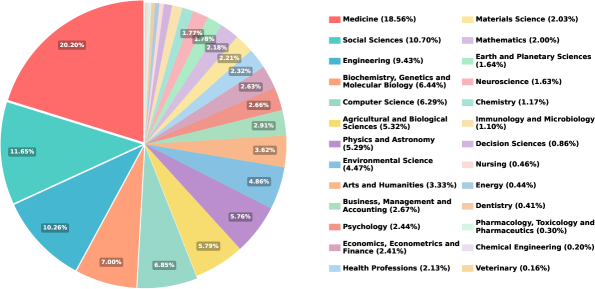

연구진이 논문 4,300만 건을 점과 선으로 이은 지식 그래프 SciAtlas를 공개했습니다. 엔티티 1억 5,700만 개, 관계 30억 개 규모입니다.
핵심은 규모가 아니라 구조입니다. 키워드와 벡터, 제목 검색에 그래프 탐색을 더해, LLM을 매번 부르지 않고 한 번에 답을 찾습니다.
그 결과 리서치 검색이 2분 안에 끝났습니다. 반복 호출형 LLM 딥리서치보다 빠르고 비용이 낮습니다.
사내 문서를 벡터 DB에 쏟아부으면
AI가 알아서 찾을 거라 믿으셨습니까?
정작 빠진 건 문서를 잇는 지도였습니다.
사내 문서를 AI에 물려 검색과 리서치를 맡깁니다. 보고서, 계약서, 회의록을 벡터 DB에 넣었습니다. 그런데 답이 자주 빗나갑니다. 분명 자료는 있는데 엉뚱한 걸 가져옵니다.
그래서 더 센 모델로 바꿔 봅니다. 임베딩도 최신으로 교체합니다. 그래도 잘 안 풀립니다.
이 논문은 빠진 조각을 짚습니다. 문제는 검색이 약해서가 아니라 문서끼리 연결이 없어서입니다. 사내 RAG를 짓는 리더라면 설계 순서를 다시 봐야 합니다.
많은 기업이 사내 지식에 AI를 붙이고 있습니다. 문의 응대, 자료 조사, 내부 검색이 대표적입니다. 대부분 벡터 DB 하나로 구축합니다.
벡터 검색은 의미가 비슷한 글을 잘 찾습니다. 그러나 무엇이 무엇과 어떻게 이어지는지는 모릅니다. 여러 출처를 엮어야 풀리는 질문에서 무너집니다.
SciAtlas는 그 빈틈을 구조로 메웠습니다. 논문 4,300만 건을 관계로 잇고, 그 위에서 탐색했습니다. 의미 검색을 넘어 연결을 따라가는 방식입니다.
첫째, 답은 더 큰 모델이 아니라 더 나은 구조였습니다. 연구진은 OpenAlex의 논문 4억 8,000만 건을 추려, 9개 엔티티 유형과 12개 관계로 이었습니다. 결과는 엔티티 1억 5,700만 개, 관계 30억 개의 지식 그래프입니다. 문서를 쌓는 게 아니라 점과 선으로 잇는 일이 핵심이었습니다.

둘째, LLM을 매번 부르지 않는 검색이 비용을 낮춥니다. 연구진은 신경기호 방식을 썼습니다. 키워드 매칭, 벡터 매칭, 제목 매칭으로 출발점을 찾고, 그래프를 따라 연관 자료로 퍼져 나갑니다. 이 과정은 규칙으로 정해져 있어 LLM을 반복 호출하지 않습니다. 그래서 한 번의 탐색이 2분 안에 끝납니다. 반복 호출형 LLM 딥리서치보다 빠르고 비용이 낮습니다.
| 구성 요소 | 규모 |
|---|---|
| 논문(Paper) | 4,330만 |
| 저자(Author) | 1억 970만 |
| 키워드(Keyword) | 376만 |
| 기관(Institution) | 12만 |
| 인용 관계(Cites) | 2억 1,388만 |
| 공저 관계(Coauthor) | 20억 6,000만 |
| 전체 관계(triplet) | 30억 |
셋째, 의미 유사도보다 관계 위상에 더 무게를 뒀습니다. 최종 순위는 세 신호를 합쳐 정합니다. 사전 검색 점수에 0.35, 그래프 전파 점수에 0.45, 인용 중요도에 0.20을 줍니다. 가장 큰 가중치가 그래프에 갔습니다. 비슷한 글을 찾는 것보다, 어떻게 이어지는지가 답에 더 가깝다는 판단입니다.
이 점이 리더에게 중요합니다. RAG가 자꾸 틀린다면 임베딩 교체가 답이 아닐 수 있습니다. 문서를 잇는 구조부터 점검해야 합니다.
규모에 위축될 필요는 없습니다. 30억 개 관계는 학술 전체를 담은 결과일 뿐입니다. 사내에서는 핵심 문서 수십 건을 잇는 것만으로도 검색 품질이 달라집니다. 원리는 같고, 규모만 우리 일에 맞추면 됩니다.
넷째, 칸막이를 넘는 탐색이 가능해졌습니다. 이 그래프는 26개 분야를 한 판에 담습니다. 의학이 18.56%로 가장 많고, 사회과학 10.70%, 공학 9.43%로 이어집니다. 한 분야에 갇히지 않고 가로지르며 연관 연구를 찾습니다. 사내도 마찬가지입니다. 마케팅 자료와 영업 자료가 따로 놀면, 같은 고객을 다룬 문서도 서로 못 찾습니다. 관계로 이으면 부서 경계를 넘어 한 번에 끌어옵니다.

문서를 벡터 DB에 넣기만 했다면 더미에 가깝습니다. 문서끼리 어떤 관계로 이어지는지부터 적어 봅니다. 관계가 비어 있다면 검색이 빗나가는 이유가 거기 있습니다. (30분)
우리 팀 핵심 문서 10종을 적겠습니다. 아래 목록을 보고 각 문서가 서로 어떤 관계로 이어지는지 표로 정리해 주세요. 관계 예시: 참조한다 / 후속이다 / 같은 고객이다 / 같은 프로젝트다. 연결이 비어 있는 문서도 따로 짚어 주세요. 문서 목록: [여기에 문서 10종 입력]
"자료를 못 찾음"과 "찾은 자료를 못 엮음"은 다릅니다. 최근 틀린 답 10건을 둘로 분류합니다. 후자가 많다면 임베딩이 아니라 연결 구조가 문제입니다. (1시간)
한 번 검색에 LLM을 몇 번 부르는지 보십시오. 반복 호출이 많을수록 비용과 지연이 큽니다. 출발점 검색만 모델에 맡기고 나머지는 규칙으로 도는 구조를 검토하십시오. (1시간)
프리프린트 논문입니다. 피어리뷰 전이라 수치와 해석이 바뀔 수 있습니다. 핵심 원리를 참고하되 단일 근거로 쓰지 마십시오.
성능 우위가 정량 입증되지 않았습니다. 저자도 한계로 밝혔듯 평가가 아직 정성적입니다. "2분"은 속도일 뿐, 정확도 비교 수치는 제시되지 않았습니다.
학술 데이터에 특화됐습니다. 논문과 저자 중심으로 설계됐습니다. 사내 문서에 그대로 옮길 도구가 아니라 설계 원리로 받아들이십시오.
업데이트가 수동입니다. 실시간 자동 갱신은 아직 구현되지 않았습니다. 빠르게 변하는 지식에는 별도 관리가 필요합니다.
AI 검색의 약점은 모델이 아니라 연결의 부재인 경우가 많습니다. 문서를 쌓기 전에 잇는 구조부터 설계하십시오.
지식 그래프(Knowledge Graph): 정보를 점(엔티티)과 선(관계)으로 잇는 구조입니다. 단순 텍스트 더미와 달리 무엇이 무엇과 어떻게 연결되는지 담습니다.
벡터 검색(Vector Search): 글의 의미를 숫자로 바꿔 비슷한 것을 찾는 방식입니다. 의미는 잘 잡지만 관계 추적은 약합니다.
RAG(검색 증강 생성): AI가 외부 자료를 먼저 검색해 답에 반영하는 방식입니다. 사내 문서 기반 AI의 기본 구조입니다.
신경기호(Neuro-Symbolic): 신경망(LLM·임베딩)과 규칙 기반 기호 연산(그래프 탐색)을 합친 방식입니다. 유연함과 정확함을 함께 노립니다.
그래프 전파(Random Walk with Restart): 그래프에서 출발점 주변을 확률적으로 걸어 다니며 연관 노드를 찾는 알고리즘입니다.
- Qiao, S., Wei, Y., Fan, J., Wu, B., Zhang, B., Wang, M., Zhu, Y., Zhang, N., Ding, K., Zhang, Q., & Chen, H. (2026, May). SciAtlas: A Large-Scale Knowledge Graph for Automated Scientific Research [Preprint]. arXiv. (원문 보기 ↗)